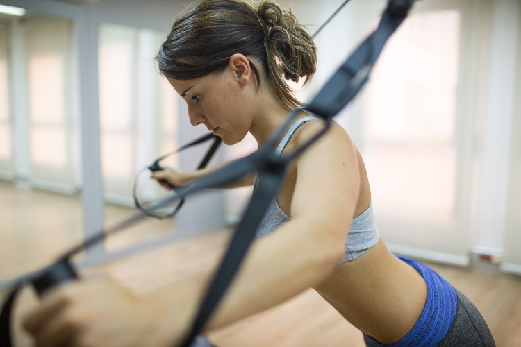

info@sibfisioterapia.com
872 037 097 - 626 530 484
C/ Cristòfol Grober 6, 1er 2a 17001 Girona
READAPTACIÓ ESPORTIVA



Circuit d'entrenament. Mètode d'entrenament per incrementar l'estat de forma utilitzant una àmplia varietat de material (TRX, Bosu, el•líptica, tirants musculars, peses, cinturó entre molts d’altres) i involucrant el major nombre de grups musculars. Combinació òptima d'exercicis cardiovasculars i de força.
El mètode de treball es basa en la individualització de l’entrenament o el procés de readaptació, així com la constant comunicació amb l’esportista. Aquest entrenament és de caràcter funcional i els seus pilars són:
- Entrenament de la força (sobrecàrrega Excèntrica)
- Tasques amb desequilibris (Sistema Propioceptiu)
- CORE Stability
- Variabilitat dels exercicis (Coordinació)
- HIIT (High Intensity Interval Training)
© 2014 - SiB Fisioteràpia
Politica de privacitat. Crèdits